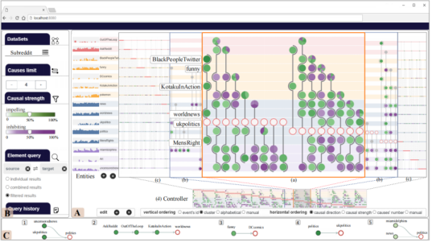
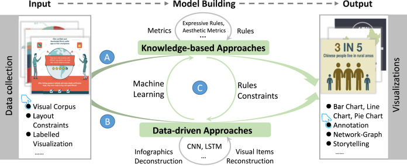
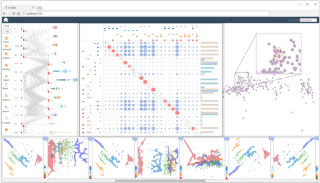
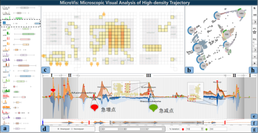

朱素佳，
2018.09-2024.06 浙江工业大学计算机学院硕博连读，
方向：大数据可视分析、数据挖掘
导师：孙国道（省杰青）、梁荣华（万人计划）
担任IEEE CHI(CCF-A)，ChinaVis等会议审稿人
录用/发表SCI/EI论文9篇，在审2篇，授权专利1项，其中一作3篇，个人谷歌学术引用量100+
获得浙江工业大学研究生一等奖学金, 学术成果二等奖学金等, ChinaVis挑战赛优秀奖(前30%)
入选ChinaVis2021最佳综述论文，Visual Informatics期刊2020年度精选热点文章
更多信息：
个人简历
-

VAC^2: Visual Analysis of Combined Causality in Event equences
S Zhu, Y Shen, Z Zhu, W Xia, B Chang, R Liang, G Sun
-

A survey on automatic infographics and visualization recommendations
S Zhu,G Sun, Q Jiang, M Zha, R Liang
-

EvoSets:Tracking the Sensitivity of Dimensionality Reduction Results Across Subspaces
Sun G, S Zhu, Jiang Q, Xia W, Liang R
IEEE Transactions on Big Data
n
-

高密度群体轨迹数据的微观可视分析
S Zhu,G Sun, Q Jiang, M Zha, R Liang
计算机辅助设计与图形学报
杭州市交通数据可视分析平台
会议审稿人
IEEE CHI 2023
ChinaVis